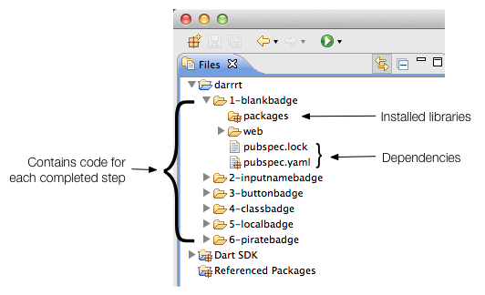
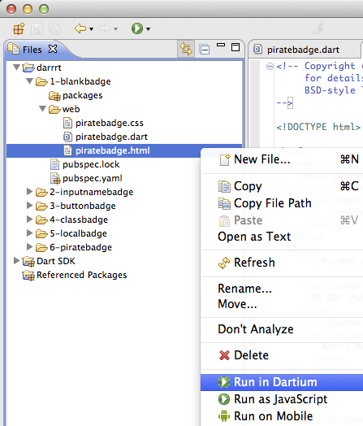
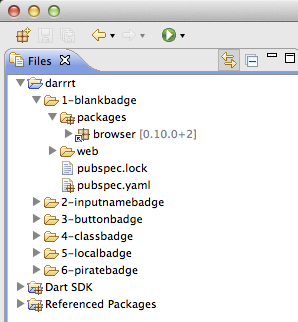
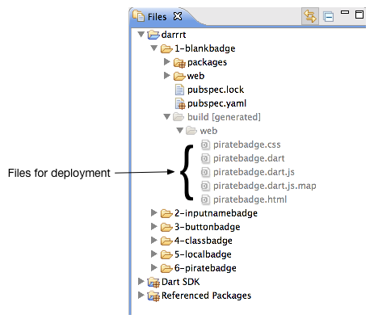

Avast, Ye Pirates: Write a Web App
In this code lab, you build a pirate badge generator from a skeleton app. The sample app provides a brief look at some Dart language and library features. This code lab assumes that you have some programming experience.
Build this app!
Map
Step 0: Set up
In this step, you download Dart and get the sample code.
Get Dart.
If you haven’t already done so, get the Dart download.
Unzip the ZIP file, which creates a directory called dart.
(For more options, go to the download page.)
The Dart tools work in recent versions of , , or .
Start the editor.
Go to the dart directory and double-click DartEditor.
Got questions? Having trouble? Go to the Troubleshooting Dart Editor page.
Get the sample code.
Download the sample code from the one-hour-codelab GitHub repo using one of the following options:
-
Download the zip file, one-hour-codelab-master.zip. Unzip the ZIP file, which creates a directory called
one-hour-codelab-master. -
Clone the repo. For example, from the command line:
% git clone https://github.com/dart-lang/one-hour-codelab.git
This creates a directory named
one-hour-codelab.
Open the one-hour-codelab sample.
In Dart Editor,
use File > Open Existing Folder…
to open the darrrt directory under one-hour-codelab.

Note:
If you see red X’s at the left of the
filenames or if a packages directory is missing,
the packages are not properly installed.
Right click pubspec.yaml and select Pub Get.
Key information
-
Several numbered directories contain the completed code for each step.
1-blankbadgecontains the skeletal version of the app that you begin with.6-piratebadgecontains the final version of the app. - Each numbered directory contains a complete project that includes:
- a
packagesdirectory containing libraries and other files from packages that the app depends on pubspec.yamlandpubspec.lockfiles that specify package dependencies This project has all the dependencies set up for you. Dart Editor automatically installs the necessary packages.
- a
-
Dart SDK contains the source code for all of the functions, variables, and classes provided by the Dart Software Development Kit.
- Referenced Packages contains the source code for all of the functions, variables, and classes for the additional libraries that this application depends on.
Step 1: Run the skeleton app
In this step, you open the source files, familiarize yourself with the Dart and HTML code, and run the app.
Expand the 1-blankbadge directory.
In Dart Editor, expand the web directory under 1-blankbadge
by clicking the little arrow
 to the left of its name.
The directory contains
to the left of its name.
The directory contains piratebadge.css, piratebadge.dart,
and piratebadge.html.
Open the files.
Open piratebadge.dart and piratebadge.html,
by double-clicking each filename in Dart Editor.
Review the code.
Get familiar with the HTML and the Dart code for the skeleton version of the app.
piratebadge.html
<html>
<head>
<meta charset="utf-8">
<title>Pirate badge</title>
<meta name="viewport"
content="width=device-width, initial-scale=1.0">
<link rel="stylesheet" href="piratebadge.css">
</head>
<body>
<h1>Pirate badge</h1>
<div class="widgets">
TO DO: Put the UI widgets here.
</div>
<div class="badge">
<div class="greeting">
Arrr! Me name is
</div>
<div class="name">
<span id="badgeName"> </span>
</div>
</div>
<script type="application/dart" src="piratebadge.dart"></script>
<script src="packages/browser/dart.js"></script>
</body>
</html>
Key information
-
During this code lab, all the changes you make to
piratebadge.htmlare within the <div> element identified with the classwidgets. -
In later steps, the <span> element with the ID
badgeNameis programmatically updated by the Dart code based on user input. -
The first <script> tag identifies the main file that implements the app. Here, it’s the
piratebadge.dartfile. -
The Dart Virtual Machine (Dart VM) runs Dart code natively. The Dart VM is built into Dartium, a special build of the Chromium browser in which you can run Dart apps natively.
-
The
packages/browser/dart.jsscript checks for native Dart support and either bootstraps the Dart VM or loads compiled JavaScript instead.
piratebadge.dart
void main() {
// Your app starts here.
}
-
This file contains the single entry point for the app—the
main()function. The <script> tags in thepiratebadge.htmlfile start the application by running this function. -
The
main()function is a top-level function. -
A top-level variable or function is one that is declared outside a class definition.
Run the app.
To run the app in Dart Editor, right click piratebadge.html
and select Run in Dartium.

Dart Editor launches Dartium, a special build of Chromium
that has the Dart Virtual Machine built in,
and loads the piratebadge.html file.
The piratebadge.html file loads the app
and calls the main() function.
You should see a TO DO comment on the left and a red and white name badge on the right.
Step 2: Add an input field
Note: Throughout this code lab,
continue to edit the files in 1-blankbadge.
You can use the files in the other directories to compare to your code
or to recover if you get off track.
In this step, you add an input field to the app. As the user types into the text field, the Dart code updates the badge from the value of the text field.
Edit piratebadge.html.
Add the <input> tag to the HTML code
within the widgets <div>.
...
<div class="widgets">
<div>
<input type="text" id="inputName" maxlength="15">
</div>
</div>
...
Key information
- The ID for the input element is
inputName. Dart uses CSS selectors, such as#inputName, to get elements from the DOM.
Edit piratebadge.dart.
Import the dart:html
library at the top of the file
(below the copyright).
import 'dart:html';
-
This imports all classes and other resources from dart:html.
-
Don’t worry about bloated code. The build process performs tree-shaking to help minimize code.
-
The dart:html library contains the classes for all DOM element types, in addition to functions for accessing the DOM.
-
Later you’ll use import with the
showkeyword, which imports only the specified classes. -
Dart Editor helpfully warns you that the import is unused. Don’t worry about it. You’ll fix it in the next step.
Register a function to handle input events on the input field.
void main() {
querySelector('#inputName').onInput.listen(updateBadge);
}
-
The
querySelector()function, defined in dart:html, gets the specified element from the DOM. Here, the code uses the selector#inputNameto specify the input field. -
The object returned from
querySelector()is the DOM element object. -
Mouse and keyboard events are served over a stream.
-
A Stream provides an asynchronous sequence of data. Using the
listen()method, a stream client registers a callback function that gets called when data is available. -
onInput.listen()listens to the text field’s event stream for input events. When such an event occurs,updateBadge()is called. -
An input event occurs when the user presses a key.
-
You can use either single or double quotes to create a string.
-
Dart Editor warns you that the function doesn’t exist. Let’s fix that now.
Implement the event handler as a top-level function.
...
void updateBadge(Event e) {
querySelector('#badgeName').text = e.target.value;
}
-
This function sets the text of the
badgeNameelement from the value of the input field. -
Event eis the argument to the updateBadge function. The argument’s name ise; its type isEvent. -
You can tell that
updateBadge()is an event handler because its parameter is anEventobject. -
The element that generated the event, the input field, is
e.target. -
Note the warning symbol next to this line of code in Dart Editor.
e.targetis typed as anEventTargetwhich does not have avalueproperty.
Fix the warning message.
...
void updateBadge(Event e) {
querySelector('#badgeName').text = (e.target as InputElement).value;
}
-
In this example,
e.targetis the input element that generated the event. -
The
askeyword typecastse.targetto anInputElementto silence warnings from Dart Editor.
Run the app.
Save your files with File > Save All.
Run the app by right clicking piratebadge.html and select Run in Dartium.
Compare your app to the one running below.
Type in the input field.
Problems?
Check your code against the files in 2-inputnamebadge.
Step 3: Add a button
In this step, you add a button to the app.
The button is enabled when the text field contains no text.
When the user clicks the button,
the app puts the name Anne Bonney on the badge.
Edit piratebadge.html.
Add the <button> tag below the input field.
...
<div class="widgets">
<div>
<input type="text" id="inputName" maxlength="15">
</div>
<div>
<button id="generateButton">Aye! Gimme a name!</button>
</div>
</div>
...
Key information
- The button has the ID
generateButtonso the Dart code can get the element.
Edit piratebadge.dart.
Below the import, declare a top-level variable to hold the ButtonElement.
import 'dart:html';
ButtonElement genButton;
-
ButtonElement is one of many different kinds of DOM elements provided by the dart:html library.
-
Variables, including numbers, initialize to null if no value is provided.
Wire up the button with an event handler.
void main() {
querySelector('#inputName').onInput.listen(updateBadge);
genButton = querySelector('#generateButton');
genButton.onClick.listen(generateBadge);
}
onClickregisters a mouse click handler.
Add a top-level function that changes the name on the badge.
...
void setBadgeName(String newName) {
querySelector('#badgeName').text = newName;
}
- The function updates the HTML page with a new name.
Implement the click handler for the button.
...
void generateBadge(Event e) {
setBadgeName('Anne Bonney');
}
- This function sets the badge name to
Anne Bonney.
Modify updateBadge() to call setBadgeName().
void updateBadge(Event e) {
String inputName = (e.target as InputElement).value;
setBadgeName(inputName);
}
- Assign the input field’s value to a local string.
Add a skeleton if-else statement to updateBadge().
void updateBadge(Event e) {
String inputName = (e.target as InputElement).value;
setBadgeName(inputName);
if (inputName.trim().isEmpty) {
// To do: add some code here.
} else {
// To do: add some code here.
}
}
-
The
Stringclass has useful functions and properties for working with string data, such astrim()andisEmpty. -
String comes from the
dart:corelibrary, which is automatically imported into every Dart program. -
Dart has common programming language constructs like
if-else.
Now fill in the if-else statement to modify the button as needed.
void updateBadge(Event e) {
String inputName = (e.target as InputElement).value;
setBadgeName(inputName);
if (inputName.trim().isEmpty) {
genButton..disabled = false
..text = 'Aye! Gimme a name!';
} else {
genButton..disabled = true
..text = 'Arrr! Write yer name!';
}
}
-
The cascade operator (
..) allows you to perform multiple operations on the members of a single object. -
The
updateBadge()code uses the cascade operator to set two properties on the button element. The result is the same as this more verbose code:
genButton.disabled = false; genButton.text = 'Aye! Gimme a name!';
Run the app.
Save your files with File > Save All.
Run the app by right clicking piratebadge.html and select Run in Dartium.
Compare your app to the one running below.
Type in the input field. Remove the text from the input field. Click the button.
Problems?
Check your code against the files in 3-buttonbadge.
Step 4: Create a PirateName class
In this step, you change only the Dart code. You create a class to represent a pirate name. When created, an instance of this class randomly selects a name and appellation from a list, or optionally you can provide a name and an appellation to the constructor.
Edit piratebadge.dart.
Add an import to the top of the file.
import 'dart:html';
import 'dart:math' show Random;
Key information
-
Using the
showkeyword, you can import only the classes, functions, or properties you need. -
Randomprovides a random number generator.
Add a class declaration to the bottom of the file.
...
class PirateName {
}
- The class declaration provides the class name.
Create a class-level Random object.
class PirateName {
static final Random indexGen = new Random();
}
-
staticdefines a class-level field. That is, the random number generator is shared with all instances of this class. -
Dart Editor italicizes static names.
-
Use
newto call a constructor.
Add two instance variables to the class, one for the first name and one for the appellation.
class PirateName {
static final Random indexGen = new Random();
String _firstName;
String _appellation;
}
- Private variables start with underscore (
_). Dart has noprivatekeyword.
Create two static lists within the class that provide a small collection of names and appellations to choose from.
class PirateName {
...
static final List names = [
'Anne', 'Mary', 'Jack', 'Morgan', 'Roger',
'Bill', 'Ragnar', 'Ed', 'John', 'Jane' ];
static final List appellations = [
'Jackal', 'King', 'Red', 'Stalwart', 'Axe',
'Young', 'Brave', 'Eager', 'Wily', 'Zesty'];
}
-
finalvariables cannot change. -
Lists are built into the language. These lists are created using list literals.
-
The
Listclass provides the API for lists.
Provide a constructor for the class.
class PirateName {
...
PirateName({String firstName, String appellation}) {
if (firstName == null) {
_firstName = names[indexGen.nextInt(names.length)];
} else {
_firstName = firstName;
}
if (appellation == null) {
_appellation = appellations[indexGen.nextInt(appellations.length)];
} else {
_appellation = appellation;
}
}
}
-
Constructors have the same name as the class.
-
The parameters enclosed in curly brackets (
{and}) are optional, named parameters. -
The
nextInt()function gets a new random integer from the random number generator. -
Use square brackets (
[and]) to index into a list. -
The
lengthproperty returns the number of items in a list. -
The code uses a random number as an index into the list.
Provide a getter for the pirate name.
class PirateName {
...
String get pirateName =>
_firstName.isEmpty ? '' : '$_firstName the $_appellation';
}
-
Getters are special methods that provide read access to an object’s properties.
-
The ternary operator
?:is short-hand for an if-then-else statement. -
String interpolation (
'$_firstName the $_appellation') lets you easily build strings from other objects. -
The fat arrow (
=> expr;) syntax is a shorthand for{ return expr; }.
Override the toString() method.
class PirateName {
...
String toString() => pirateName;
}
-
Because the Object implementation of
toString()doesn’t give much information, many classes overridetoString(). -
When you call
print(anObject)for any non-String, it prints the value returned byanObject.toString(). -
Overriding
toString()can be especially helpful for debugging or logging.
Modify the function setBadgeName() to use a PirateName instead of a String:
void setBadgeName(PirateNamenewName) { querySelector('#badgeName').text = newName.pirateName; }
- This code calls the getter to get the PirateName as a string.
Change updateBadge() to generate a PirateName based on the input field value.
void updateBadge(Event e) {
String inputName = (e.target as InputElement).value;
setBadgeName(new PirateName(firstName: inputName));
...
}
- The call to the constructor provides a value for one optional named parameter.
Change generateBadge() to generate a PirateName instead of using Anne Bonney.
void generateBadge(Event e) {
setBadgeName(new PirateName());
}
- In this case, the call to the constructor passes no parameters.
Run the app.
Save your files with File > Save All.
Run the app by right clicking piratebadge.html and select Run in Dartium.
Compare your app to the one running below.
Type in the input field. Remove the text from the input field. Click the button.
Problems?
Check your code against the files in 4-classbadge.
Step 5: Save to local storage
In this step, you give the app some persistence by saving the badge name to local storage each time it changes. When you restart the app, it initializes the badge from the saved name.
Edit piratebadge.dart.
Import the JSON converter from the dart:convert library.
import 'dart:html';
import 'dart:math' show Random;
import 'dart:convert' show JSON;
Key information
JSONprovides convenient access to the most common JSON use cases.
Add a named constructor to the PirateName class.
class PirateName {
...
PirateName.fromJSON(String jsonString) {
Map storedName = JSON.decode(jsonString);
_firstName = storedName['f'];
_appellation = storedName['a'];
}
}
-
The constructor creates a new PirateName instance from a JSON-encoded string.
-
PirateName.fromJSONis a named constructor. -
JSON.decode()parses a JSON string and creates Dart objects from it. -
The pirate name is decoded into a
Mapobject.
Add a getter to the PirateName class that encodes a pirate name in a JSON string.
class PirateName {
...
String get jsonString => JSON.encode({"f": _firstName, "a": _appellation});
}
- The getter formats the JSON string using the map format.
Declare a top-level string.
final String TREASURE_KEY = 'pirateName';
void main() {
...
}
- You store key-value pairs in local storage. This string is the key. The value is the pirate name.
Save the pirate name when the badge name changes.
void setBadgeName(PirateName newName) {
if (newName == null) {
return;
}
querySelector('#badgeName').text = newName.pirateName;
window.localStorage[TREASURE_KEY] = newName.jsonString;
}
- Local storage is provided by the browser’s
Window.
Add a top-level function called getBadgeNameFromStorage().
void setBadgeName(PirateName newName) {
...
}
PirateName getBadgeNameFromStorage() {
String storedName = window.localStorage[TREASURE_KEY];
if (storedName != null) {
return new PirateName.fromJSON(storedName);
} else {
return null;
}
}
- The function retrieves the pirate name from local storage and creates a PirateName object from it.
Call the function from the main() function.
void main() {
...
setBadgeName(getBadgeNameFromStorage());
}
- Initialize the badge name from local storage.
Run the app.
Save your files with File > Save All.
Run the app by right clicking piratebadge.html and select Run in Dartium.
Compare your app to the one running below.
Click the button to put a name on the badge. Start the app again by duplicating this window.
Problems?
Check your code against the files in 5-localbadge.
Step 6: Read names from JSON-encoded file
In this step, you change the PirateName class to get the list of names and appellations from a JSON file. This gives you a chance to add more names and appellations to the program.
Create piratenames.json.
Use File > New File… to create a JSON-encoded file
named piratenames.json with the following content.
Put the file in 1-blankbadge alongside the Dart and HTML files you’ve been editing.
{ "names": [ "Anne", "Bette", "Cate", "Dawn",
"Elise", "Faye", "Ginger", "Harriot",
"Izzy", "Jane", "Kaye", "Liz",
"Maria", "Nell", "Olive", "Pat",
"Queenie", "Rae", "Sal", "Tam",
"Uma", "Violet", "Wilma", "Xana",
"Yvonne", "Zelda",
"Abe", "Billy", "Caleb", "Davie",
"Eb", "Frank", "Gabe", "House",
"Icarus", "Jack", "Kurt", "Larry",
"Mike", "Nolan", "Oliver", "Pat",
"Quib", "Roy", "Sal", "Tom",
"Ube", "Val", "Walt", "Xavier",
"Yvan", "Zeb"],
"appellations": [ "Awesome", "Captain",
"Even", "Fighter", "Great", "Hearty",
"Jackal", "King", "Lord",
"Mighty", "Noble", "Old", "Powerful",
"Quick", "Red", "Stalwart", "Tank",
"Ultimate", "Vicious", "Wily", "aXe", "Young",
"Brave", "Eager",
"Kind", "Sandy",
"Xeric", "Yellow", "Zesty"]}
Key information
- The file contains a JSON-encoded map, which contains two lists of strings.
Edit piratebadge.html.
Disable the input field and the button.
...
<div>
<input type="text" id="inputName" maxlength="15" disabled>
</div>
<div>
<button id="generateButton" disabled>Aye! Gimme a name!</button>
</div>
...
- The Dart code enables the text field and the button after the pirate names are successfully read from the JSON file.
Edit piratebadge.dart.
Add an import to the top of the file.
import 'dart:html';
import 'dart:math' show Random;
import 'dart:convert' show JSON;
import 'dart:async' show Future;
-
The
dart:asynclibrary provides for asynchronous programming. -
A
Futureprovides a way to get a value in the future. (For JavaScript developers: Futures are similar to Promises.)
Replace the names and appellations lists with these static, empty lists:
class PirateName {
...
static List<String> names = [];
static List<String> appellations = [];
...
}
-
Be sure to remove
finalfrom these declarations. -
[]is equivalent tonew List(). -
A List is a generic type—a List can contain any kind of object. If you intend for a list to contain only strings, you can declare it as
List<String>.
Add two static functions to the PirateName class:
class PirateName {
...
static Future readyThePirates() async {
String path = 'piratenames.json';
String jsonString = await HttpRequest.getString(path);
_parsePirateNamesFromJSON(jsonString);
}
static _parsePirateNamesFromJSON(String jsonString) {
Map pirateNames = JSON.decode(jsonString);
names = pirateNames['names'];
appellations = pirateNames['appellations'];
}
}
-
readyThePiratesis marked with theasynckeyword. An async function returns a Future immediately, so the caller has the opportunity to do something else while waiting for the function to complete its work. -
HttpRequestis a utility for retrieving data from a URL. -
getString()is a convenience method for doing a simple GET request that returns a string. -
getString()is asynchronous. It sets up the GET request and returns a Future that completes when the GET request is finished. -
The
awaitexpression, which can only be used in an async function, causes execution to pause until the GET request is finished (when the Future returned bygetString()completes). -
After the GET request returns a JSON string, the code extracts pirate names and appellations from the string.
Add a top-level variable.
SpanElement badgeNameElement;
void main() {
...
}
- Stash the span element for repeated use instead of querying the DOM for it.
Make these changes to the main() function.
void main() {
InputElement inputField = querySelector('#inputName');
inputField.onInput.listen(updateBadge);
genButton = querySelector('#generateButton');
genButton.onClick.listen(generateBadge);
badgeNameElement = querySelector('#badgeName');
...
}
- Stash the span element in the global variable. Also, stash the input element in a local variable.
Then, add the code to get the names from the JSON file, handling both success and failure.
main()async{ ...try { await PirateName.readyThePirates(); //on success inputField.disabled = false; //enable genButton.disabled = false; //enable setBadgeName(getBadgeNameFromStorage()); } catch (arrr) { print('Error initializing pirate names: $arrr'); badgeNameElement.text = 'Arrr! No names.'; }}
-
Mark the function body with
async, so this function can use theawaitkeyword. -
Remove
voidas the return type formain(). Asynchronous functions must return a Future, so you can either specify a Future return type or leave it blank. -
Call the
readyThePirates()function, which immediately returns a Future. -
Use the
awaitkeyword to make execution pause until that Future completes. -
When the Future returned by
readyThePirates()successfully completes, set up the UI. -
Use
tryandcatchto detect and handle errors.
Run the app.
Save your files with File > Save All.
Run the app by right clicking piratebadge.html and select Run in Dartium.
If you want to see what happens when the app can’t find the .json file,
change the file name in the code and run the program again.
Compare your app to the final version running below.
Problems?
Check your code against the files in 6-piratebadge.
Share your pirate name.
Share your pirate name with the world.
Step 7: Build and run the app
In this step, you use pub build to
generate the assets for the app
and put them into a new directory named build.
In addition to other tasks,
the build process generates minified JavaScript that
can be run by any modern browser.
Note that the one-hour-codelab directory
contains several directories, one for each step,
all of which are considered
part of the one-hour-codelab application.
The build process builds the assets for each directory.
Each directory can be individually deployed.
Check out pubspec.yaml
Double-click the pubspec.yaml file to open it.
Click the Source tab at the bottom of the editing pane.
name: avast_ye_pirates
description: Write a Dart web app code lab
dependencies:
browser: any
Key information
-
A
pubspec.yamlfile in a directory identifies the directory and its contents as an application. -
pubspec.yamlprovides meta-data for the application, such as its name. -
The
pubspec.yamlfile also lists the libraries on which the app depends. Thebrowserlibrary needed by this app is hosted on pub.dartlang.org along with many others. -
anyselects the latest package that matches your SDK.
Look at the packages directory
In Dart Editor, expand the packages directory under 1-blankbadge.

Key information
-
The
packagesdirectory contains the code for all of the dependencies listed in thepubspec.yamlfile. These are installed automatically by Dart Editor. -
The
browserpackage contains thedart.jsscript that checks for native Dart support. -
The packages must be included in the built application in order for the app to be successfully deployed.
Run pub build
Select pubspec.yaml
then select Tools > Pub Build - Minified,
which builds everything under the one-hour-codelab directory.
The output looks something like this:
Loading source assets... Building avast_ye_pirates... [Info from Dart2JS]: Compiling avast_ye_pirates|web/piratebadge.dart... [Info from Dart2JS]: Took 0:00:08.671410 to compile avast_ye_pirates|web/piratebadge.dart. Built 6 files to "build".
Key information
-
The
pub buildcommand creates abuilddirectory. -
You can select either Pub Build - Minified or Pub Build - Debug. When building minified JavaScript, all whitespace and extraneous characters are removed, creating a more compact file, but one that is less readable.
-
The
builddirectory contains everything needed to deploy the project.
Look at the build directory
In the 1-blankbadge directory where you have been working,
expand the build directory, then expand the web directory.

Key information
-
build/webcontains all of the files needed for the app to be deployed separately. -
The
piratebadge.dart.jsfile is a JavaScript file that has been minified. When deployed, this file runs in the browser.
Run the app
Right click the piratebadge.html file
and choose Run in Browser from the menu.
Key information
- The app runs on localhost. To share your app with others, you need to deploy the app to a hosting service.
What next?
Now that you’ve written your app, what do you do now? Here are some suggestions.
Deploy a server and your app
The server side code lab allows you create a pirate crew by storing pirate names to a RESTful Dart server.
Also, see the Write HTTP Clients & Servers tutorial if you are interested in server-side programming.
Check out the samples.
Run some Dart programs online and check out the source code on our Samples page.
Read the tutorials.
Learn more about Dart from the Dart tutorials.
Summary and resources
Think about what you’ve done!
This code lab provided a tour of most Dart language features and many library features. Here’s where to go to learn more.
The Dart language
A Tour of the Dart Language shows you how to use each major Dart feature, from variables and operators to classes and libraries. This code lab introduced the following Dart language features, all of which are covered in more detail in the language tour.
- string interpolation (
'$_firstName the $_appellation') - the cascade operator (
..) - the fat arrow (
=>) function syntax - the ternary operator (
?:) - named constructors (
PirateName.fromJSON(...)) - optional parameters
- a class
- getters
- instance methods and fields
- class level methods and fields
- top-level variables and functions
- typecasting with
as((e.target as InputElement)) - import, and import with
show(import 'dart:math' show Random;) - generics
- asynchrony support (
asyncandawait)
Online documentation
The Dart libraries
- A Tour of the Dart Libraries shows you how to use the major features in Dart’s libraries.
API documentation for classes
- String, List, Map, Random, InputElement, ButtonElement, Event, HttpRequest Future, and Stream
API documentation for libraries
API documentation for JSON and local storage
- LocalStorage, and JSON
Feedback
Please provide feedback on the dartlang repo on GitHub.